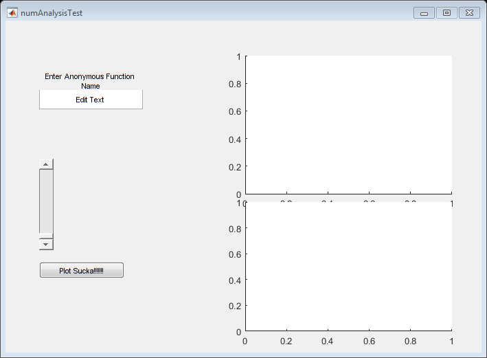

function varargout = numAnalysisTest(varargin) % NUMANALYSISTEST MATLAB code for numAnalysisTest.fig % NUMANALYSISTEST, by itself, creates a new NUMANALYSISTEST or raises the existing % singleton*. % % H = NUMANALYSISTEST returns the handle to a new NUMANALYSISTEST or the handle to % the existing singleton*. % % NUMANALYSISTEST('CALLBACK',hObject,eventData,handles,...) calls the local % function named CALLBACK in NUMANALYSISTEST.M with the given input arguments. % % NUMANALYSISTEST('Property','Value',...) creates a new NUMANALYSISTEST or raises the % existing singleton*. Starting from the left, property value pairs are % applied to the GUI before numAnalysisTest_OpeningFcn gets called. An % unrecognized property name or invalid value makes property application % stop. All inputs are passed to numAnalysisTest_OpeningFcn via varargin. % % *See GUI Options on GUIDE's Tools menu. Choose "GUI allows only one % instance to run (singleton)". % % See also: GUIDE, GUIDATA, GUIHANDLES % Edit the above text to modify the response to help numAnalysisTest % Last Modified by GUIDE v2.5 11-Nov-2016 09:02:19 % Begin initialization code - DO NOT EDIT gui_Singleton = 1; gui_State = struct('gui_Name', mfilename, ... 'gui_Singleton', gui_Singleton, ... 'gui_OpeningFcn', @numAnalysisTest_OpeningFcn, ... 'gui_OutputFcn', @numAnalysisTest_OutputFcn, ... 'gui_LayoutFcn', [] , ... 'gui_Callback', []); if nargin && ischar(varargin{1}) gui_State.gui_Callback = str2func(varargin{1}); end if nargout [varargout{1:nargout}] = gui_mainfcn(gui_State, varargin{:}); else gui_mainfcn(gui_State, varargin{:}); end % End initialization code - DO NOT EDIT % --- Executes just before numAnalysisTest is made visible. function numAnalysisTest_OpeningFcn(hObject, eventdata, handles, varargin) % This function has no output args, see OutputFcn. % hObject handle to figure % eventdata reserved - to be defined in a future version of MATLAB % handles structure with handles and user data (see GUIDATA) % varargin command line arguments to numAnalysisTest (see VARARGIN) % Choose default command line output for numAnalysisTest handles.output = hObject; % Update handles structure guidata(hObject, handles); % UIWAIT makes numAnalysisTest wait for user response (see UIRESUME) % uiwait(handles.figure1); % --- Outputs from this function are returned to the command line. function varargout = numAnalysisTest_OutputFcn(hObject, eventdata, handles) % varargout cell array for returning output args (see VARARGOUT); % hObject handle to figure % eventdata reserved - to be defined in a future version of MATLAB % handles structure with handles and user data (see GUIDATA) % Get default command line output from handles structure varargout{1} = handles.output; function inFunHandle_Callback(hObject, eventdata, handles) % hObject handle to inFunHandle (see GCBO) % eventdata reserved - to be defined in a future version of MATLAB % handles structure with handles and user data (see GUIDATA) % Hints: get(hObject,'String') returns contents of inFunHandle as text % str2double(get(hObject,'String')) returns contents of inFunHandle as a double inStr = get(hObject,'String') inFunHand = evalin('base',inStr{1}) ; % Curly bracket just in case it is a cell; testRange = [0,5]; % Plot range for input axes(handles.axes1); fplot(inFunHand,testRange); %Save function handle for later use setappdata(handles.inFunHandle,'Value',inFunHand); % --- Executes during object creation, after setting all properties. function inFunHandle_CreateFcn(hObject, eventdata, handles) % hObject handle to inFunHandle (see GCBO) % eventdata reserved - to be defined in a future version of MATLAB % handles empty - handles not created until after all CreateFcns called % Hint: edit controls usually have a white background on Windows. % See ISPC and COMPUTER. if ispc && isequal(get(hObject,'BackgroundColor'), get(0,'defaultUicontrolBackgroundColor')) set(hObject,'BackgroundColor','white'); end % --- Executes on button press in pushbutton1. function pushbutton1_Callback(hObject, eventdata, handles) % hObject handle to pushbutton1 (see GCBO) % eventdata reserved - to be defined in a future version of MATLAB % handles structure with handles and user data (see GUIDATA) % Get the function handle f_x = getappdata(handles.inFunHandle,'Value'); %Declare a base range baseRange = [0,1]; %Get range multiplier from slider rngMul = get(handles.rngSlider,'Value'); effRange = rngMul * baseRange; %Plot on second axes axes(handles.axes2) fplot(f_x,effRange); %Set independent variable t = linspace(0,10,100); dataVector = f_x(t); %Save back to matlab's base workspace assignin('base','dVec',dataVector) % --- Executes on slider movement. function rngSlider_Callback(hObject, eventdata, handles) % hObject handle to rngSlider (see GCBO) % eventdata reserved - to be defined in a future version of MATLAB % handles structure with handles and user data (see GUIDATA) % Hints: get(hObject,'Value') returns position of slider % get(hObject,'Min') and get(hObject,'Max') to determine range of slider % --- Executes during object creation, after setting all properties. function rngSlider_CreateFcn(hObject, eventdata, handles) % hObject handle to rngSlider (see GCBO) % eventdata reserved - to be defined in a future version of MATLAB % handles empty - handles not created until after all CreateFcns called % Hint: slider controls usually have a light gray background. if isequal(get(hObject,'BackgroundColor'), get(0,'defaultUicontrolBackgroundColor')) set(hObject,'BackgroundColor',[.9 .9 .9]); end